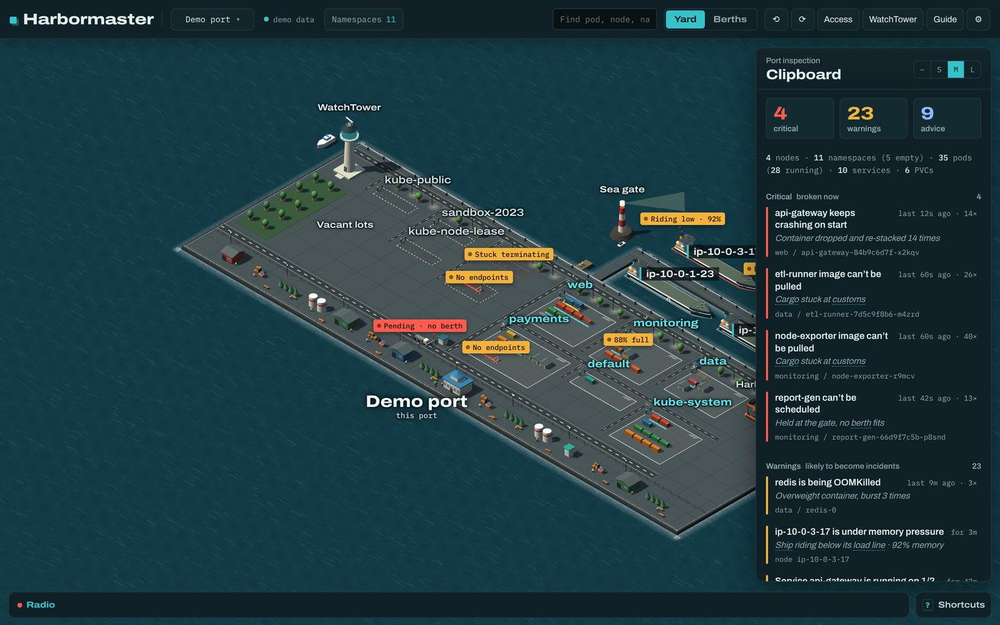
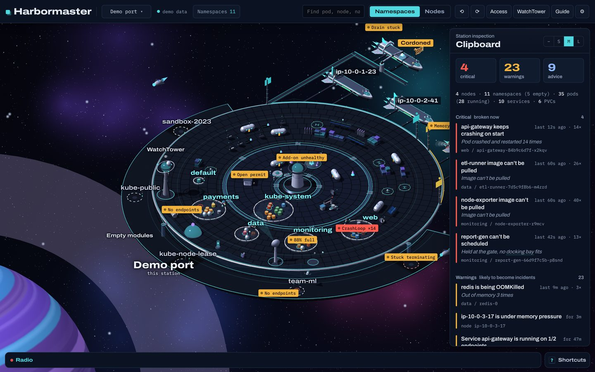

Your Kubernetes cluster, as a port you can look around.
Harbormaster is a Mac app that draws a cluster as a working harbor. Namespaces are yards, nodes are ships, pods are containers, and trouble shows up where it happens.

What it does
- Finds what's wrong, and why. Crash loops, image pull failures, OOMKills, unschedulable pods, stuck rollouts and drains, Services with no endpoints and expiring certificates, worst first, each with when it started, the likely cause and the commands to check it.
- Access in plain words. Who has full control, who can gain more access, and what each ServiceAccount can do.
- Amazon EKS aware. Access entries, add-on versions, Pod Identity, IRSA, upgrade readiness and the version's support window.
- WatchTower. Alerts for new critical findings and recoveries, maintenance windows and an exportable findings report.
- Learn Kubernetes on the map. A built-in demo cluster with planted problems and guided lessons. No cluster needed.
- Two worlds. The harbor, or the same cluster as a space station.

Read-only and private
Harbormaster only reads from your cluster and never changes anything. It uses your existing kubeconfig and AWS CLI profiles. There's no account, no analytics and no tracking: your cluster data goes only between your Mac and your cluster. Privacy policy.
Questions or problems? See Support.